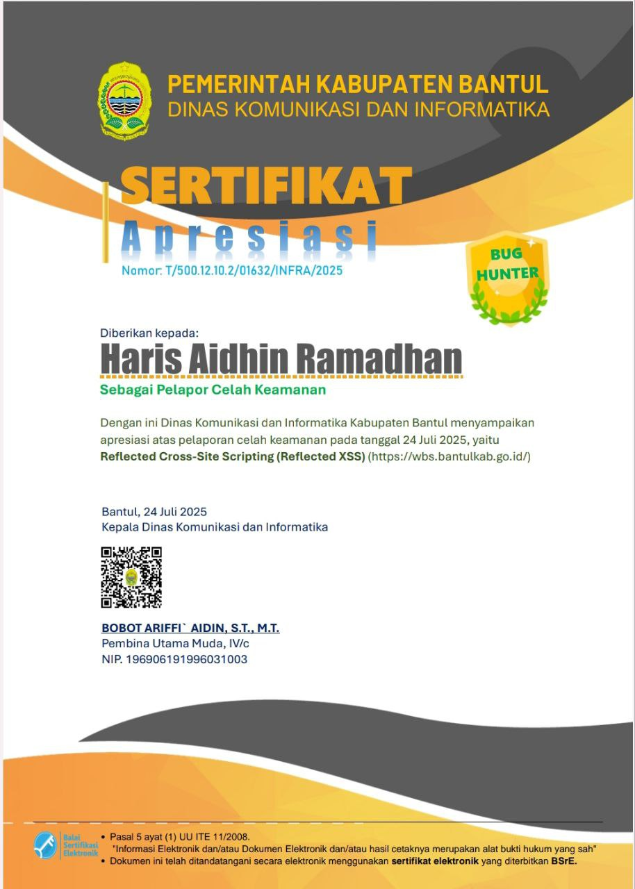
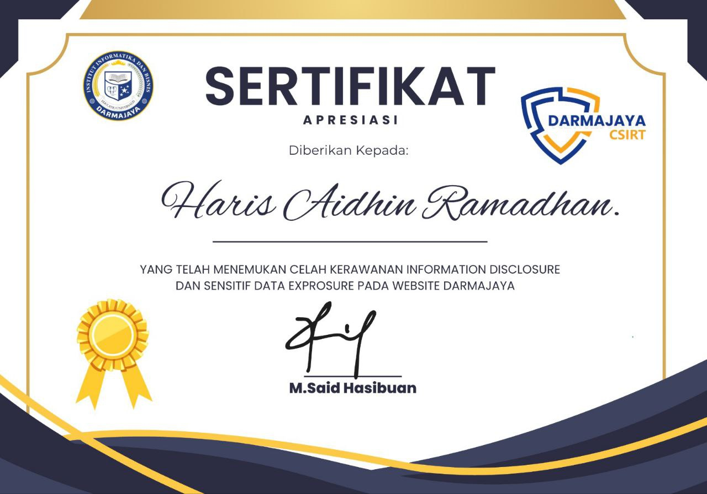
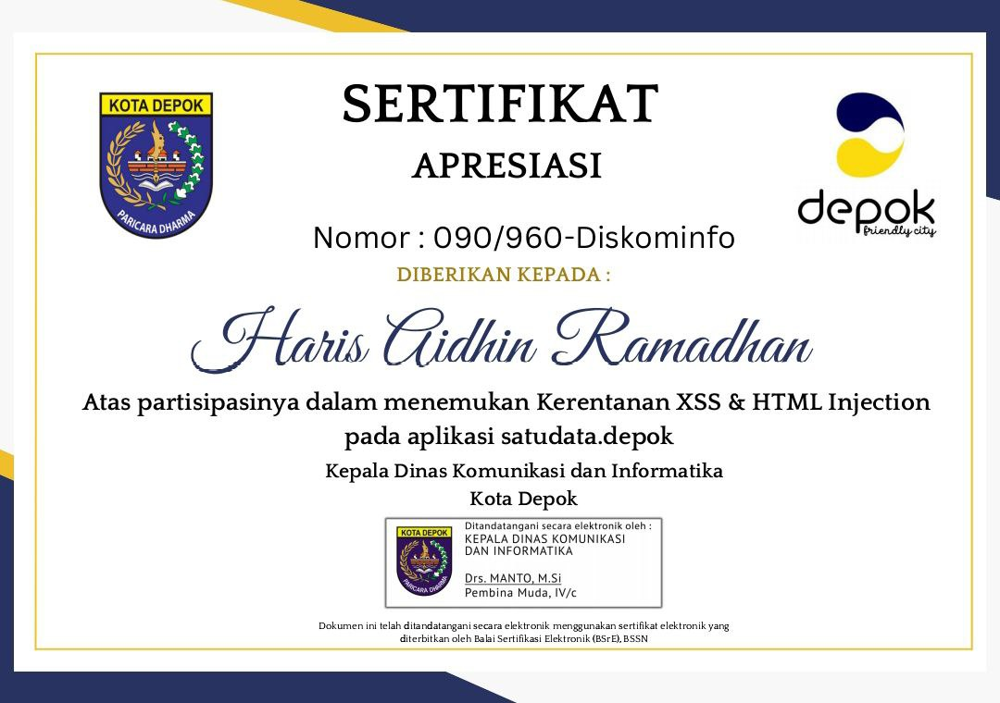
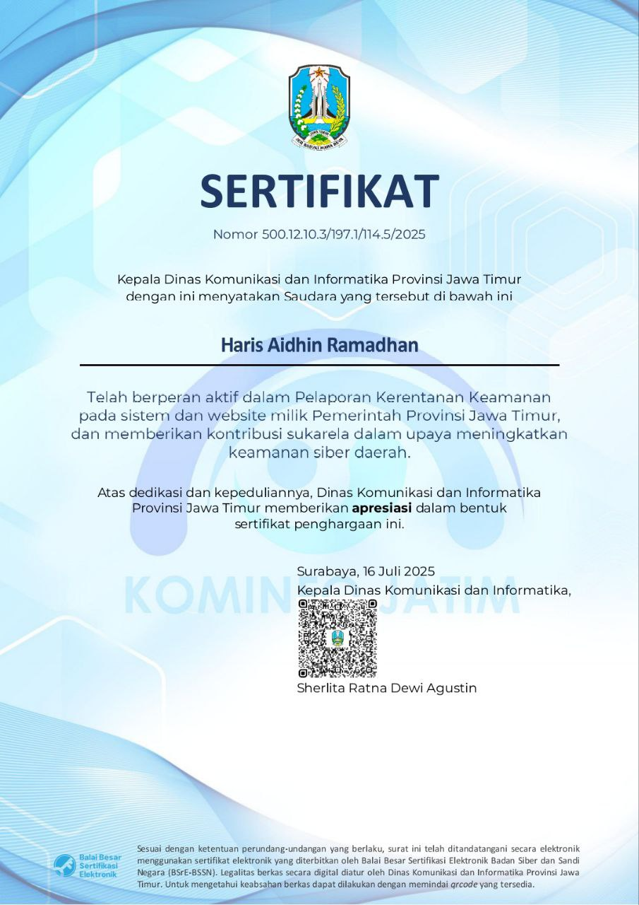
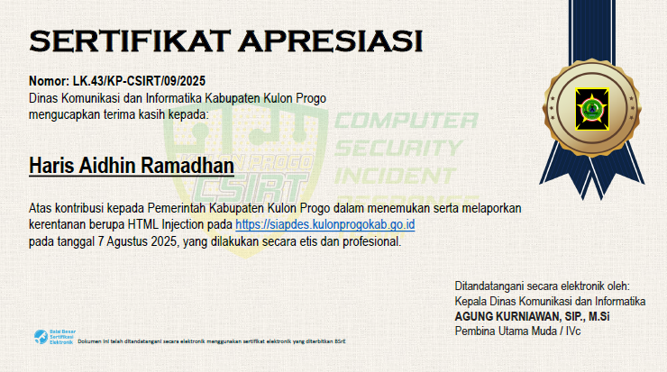
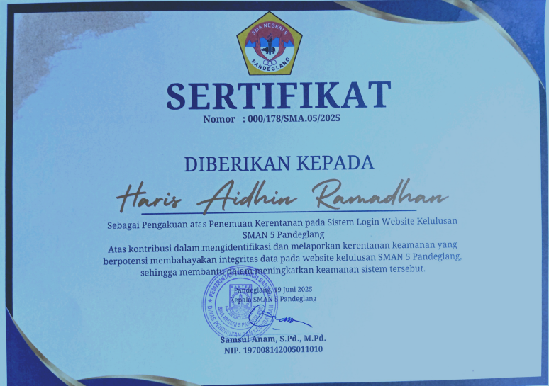
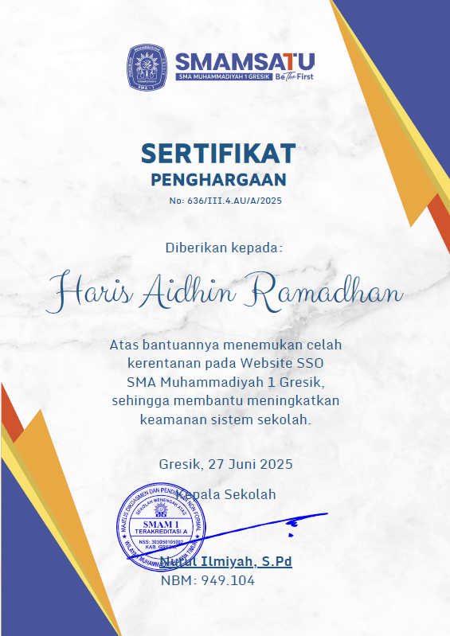
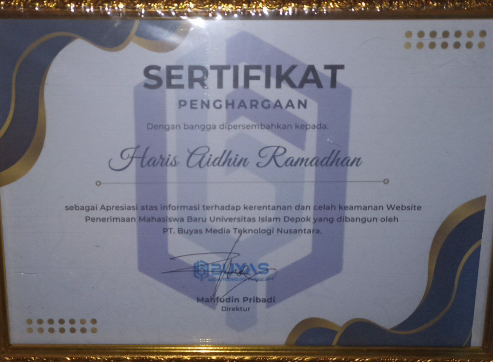

Haris Aidhin Ramadhan
Pentester | Bug Hunter
Tentang Saya
Saya adalah seorang Pentester dan Bug Hunter yang berpengalaman dalam mengidentifikasi dan memperbaiki kerentanan keamanan pada sistem dan aplikasi. Dengan latar belakang yang kuat dalam keamanan siber, saya berkomitmen untuk membantu organisasi melindungi aset digital mereka dari ancaman yang berkembang.
Sertifikat
Diskominfo kabupaten bantul

Darmajaya csirt

Diskominfo Depok

Diskominfo Provinsi Jawa Timur

Diskominfo Kulon progo

Sman 5 Pandegalang

Smam Satu Gresik

Universitas Islam Depok

Kontak
Silakan hubungi saya melalui LinkedIn atau GitHub untuk kolaborasi dan pertanyaan lebih lanjut.